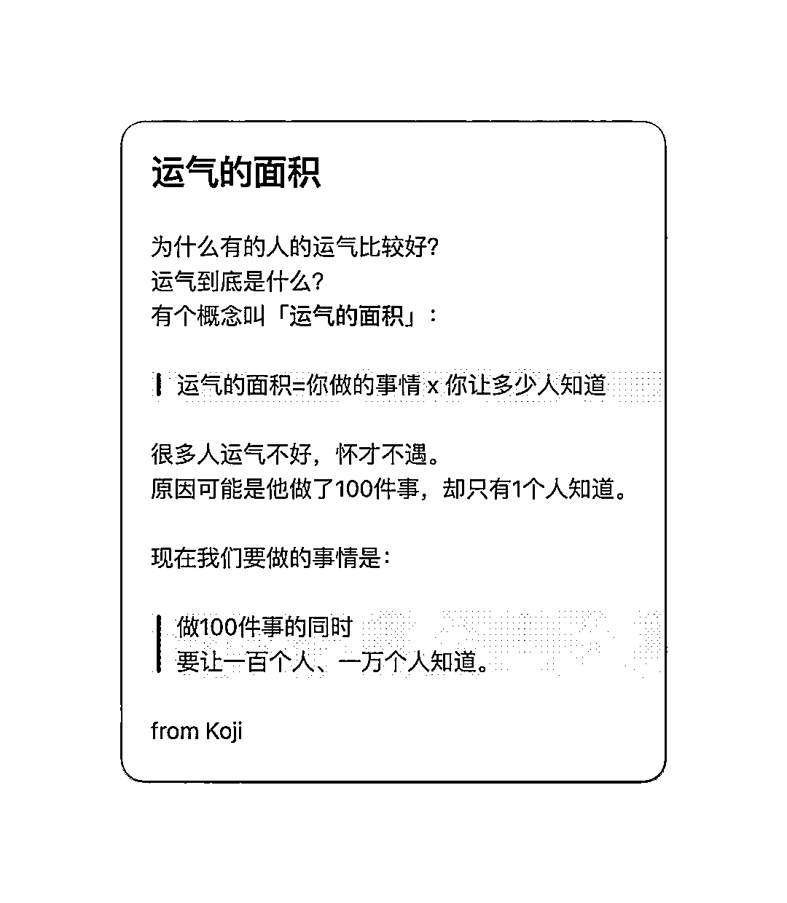

沉浸式写风向标一段时间，我的一些分享和启发
来源：https://kj259khusm.feishu.cn/docx/Beu7dftgioxogvxqvrdcWW8OnCg
圈友们好，我是浅笑，
前一段时间认识了老彭，受老彭（标王）的启发，我也开始写风向标，想要训练自己对信息的敏感度，在这一个星期内，发不了二三十条风向标，中标了四条。
甚至有官方运营来加我微信，受到了认可
后面又加上了坤汀，也受到了认可，夸我的标都蛮不错的，感受到了发布风向标的正反馈。
想着自己从发布风向标中得到了益处，也有一些心得感悟，结合自己的分享经历，还有看生财航海的风向标挖掘的航海手册，写一篇怎么写好风向标的分享。
- 从中标中找中标，我会把之前中标的帖子，感兴趣的都看一下，找出其中最有启发的一点。
- 看到有启发的，转到微信单人群，之后方便查看，然后会把风向标手册使用置顶，方便查看
- 看这个标，满足了哪些需求，产品有什么特殊点，搞流量的方式有什么可学习的，变现端有什么特殊的。
- 在评论群中找需求，尤其是带有问号，感叹号的评论
- 扩展需求，查看大众有什么需求，用关键词依次+26 个字母弹出搜索框，多换几个，会发现一个新的世界。
- 很多人对流量有误解，认为流量是水，完美得覆盖了一个圈层，实际上流量是一颗颗大小不一的钢珠，社会圈层被重构了，一颗颗大钢珠无法覆盖所有圈层，留下了非常多的缝隙，等待小钢珠去填满，每一个圈层都对应这一类需求，要了解这部分需求，每一个圈层的需求就是一个风向标。
- 看差异化服务，某个产品满足了其他产品未满足的需求，从而更有竞争力。
- 在我们日常刷视频和笔记的时候，建议养成习惯，多多留意播放量高的内容，看看账号粉丝数是不是一个低粉爆款的类型。
- 关注抖音热点宝，灰豚数据，蝉妈妈，筛选出低粉爆款内容，所谓低粉爆款，就是异常值。
- 热点宝免费
- 灰豚数据，蝉妈妈，千瓜等工具，都可以去闲鱼淘宝买日卡，一天内把自己想搜索的全部搜索一下，这样也便于理清思路
- 办了月卡，贵而且让自己有了拖延的想法。
- 关注抖音上突然百万播放的内容，火起来就是异常值。
- 在中标的帖子里，我会多看需求挖掘，挖掘出一个不一样多需求，迁移到另外一个风向标，可能就是不同的生意。
- 集中领域看帖子，官方有整理，小红书所有中标贴，微信所有中标贴，抖音所有中标贴，一下子看完，触类旁通。
- 如何从产品/服务出发，挖掘更多的风向标，问这几个问题。@星辰
- 谁是目标用户？
- 目标用户用这个产品/服务是为了解决什么问题？
- 目标用户在哪里聚集？
- 当前卖家是怎么进行销售的？
- 产品成本如何？
- 产品的上下游是什么？
- 有什么关联业务存在？
- 虚拟产品怎么挖掘风向标？@黄岛主
- 批量抓取课程、资料等信息，通过数据分析找到值得挖掘的虚拟产品
- 关注近期热门领域，看有什么虚拟资料相关
- 如果想找工具站、app 类的产品，我们也可以关注一些排行榜网站，看看近期数据不错的应用工具有哪些？
- 整理所关注行业的通用词根，并通过 5118这样的关键词工具进行关键词挖掘，找到更明确的需求
- 这个产品有什么差异化服务？满足了其他同类别产品什么样的需求？
- 找一个蓝海产品的方法，有稳定流量➕产品很差。怎么样才算是稳定的流量呢？就是你任何时间去看他，他都表现出不稳不火的样子。而产品很差，其中的操作要点是“它比你能力范围内能做到更差”差是相对于你的。@刘小排
- 从流量出发，挖掘风向标有三种形式，
- 低粉爆款，
- 突然百万➕播放，
- 涨粉很快。以上三个都是异常值，都可以挖掘。
- 从变现出发，挖掘风向标
- 高销售变现项目。销量越高，一定程度上代表市场越大，空间越大。
- 高客单价变现项目。高客单价越高，如果同时花费成本相对较低，代表单件产品就能获得的利润额越高。
- 高投放 ROI。ROI=投放带来多销售额/投放费用，ROI＞1，说明收入高于投入；ROI 越高，代表每投入一块钱赚到的钱越多
- 预估别人的 ROI，需要用投放的生意，大概率是赚钱的。
- 关注常见的信息挖掘渠道，以下来源于风向标航海手册，挖掘风向标最重要的就是对数据敏感。
- 抖音/快手数据分析平台：
- 蝉妈妈
- 官方网站：https://m.chanmama.com
- 功能：找达人，找爆品，找直播间，找品牌小店等等
- 闲鱼日卡九元，性价比很高
- 抖查查
- 官方网站：https://www.douchacha.com
- 主要功能：直播榜，达人涨粉榜，热销商品，飙升视频等
- 考古加
- 官方网站：https://m.kaogujia.com
- 主要功能：找达人，商品，直播，小店，品牌，视频，关键词等，还可以看达人榜，直播榜，商品榜，小店榜
- 巨量百应
- 官方网站：https://buyin.jinritemai.com/mpa/account/login?log_out=1&type=24
- 主要功能：是抖音为达人、商家、机构服务商提供的综合商品分享管理平台。可以在这里管理橱窗商品、管理直播间商品；可以分析自己账号整体的交易数据情况，包括图文、店铺和直播的带货。
- 价格：免费。但仅支持5类人登录：
- 抖音/头条/抖音火山版的达人（需开通商品分享权限）
- 合作商家（指没有入驻小店，但被邀请合作的外部商家）
- 小红书数据平台
- 蝉小红网站链接
- 官方网站：www.chanxiaohong.com
- 千瓜数据
- 主要功能：商品、达人挖掘、分析；热门内容查找、商品营销行为分析等
- 视频号数据分析
- 新视：
- 网站链接:https:/xs.newrank.cn/home
- 主要功能：找视频号、榜单、直播分析、直播商品分析、流量推广、对接合作等等。
- 友望数据
- 网站链接：http:/www.youwant.cn/
- 主要功能：目前主要有视频号榜单、直播带货榜，可以分析视频、达人、直播数据。
- 淘宝数据分析
- 生意参谋
- 网站链接：https://sycm.taobao.com/custom/
- 主要功能：观测店铺数据，可以查看在线商品的搜索人气、点击量、支付转化率等等。还有选词助手、商品温度计、销量测等等。
- B 站数据分析
- 火烧云数据
- 主要功能：分析大盘流量，查找、分析UP主，带货榜，上单分析等等
- app 数据分析
- 蝉大师
- 主要功能：查询苹果、安卓所有APP的数据，包括排名、点击量、下载量等等。
- 5118
- 网站网址：https://www.5118.com
- 功能：行业词库、网站SEO数据分析。可以查各行业的热门词、网站搜索热门词等等。
- V 先生有一篇帖子，做自媒体，从最小阻力里开始，写风向标也可以从最小阻力开始，先在其他人的中标下面评论，写出最有启发的一点，可能写着写着就有感觉了。
- 想要写好风向标，重点还是多写，刚开始写得可能不好，多写几条就有感觉了。
- 学会使用 AI 软件发散思维，看到一个不错的标，试着拆分一下，比如在小红书上面怎么卖宠物，那么小红书可以替换成其他平台，卖这个动作可以替换成其他需求，宠物这个可以让 ChatGPT 思考有没有其他类似的业务。
- 假如说在节假日期间，不能发风向标，但是灵感不记录就会失效，那么我会先记录在 flomo 笔记上，然后把图片也加入，等到了开放期间，我就会复制到星球上。
- 也可以注意一些没中标的风向标，可以去更深度地挖掘更有用的信息。没中标有时候不是这个帖子没有达到中标的要求，而是没有挖掘最有用的那个点。
- 多数关注不同的群体，500万互联网人以外的圈子，是真实世界。把自己代入到其他人群中，假如是二次元，假如是男同，假如是老年人，假如是失业者，假如维权失败，假如是一个老师，假如是一个开小卖铺的老板。
- 下载足够多的软件，手机上有多少平台，手机上有多少工具，尝试去搜索不同的软件，下载安装使用。
- 看到某个广告，不要觉得理所应当，点一下看看什么套路，有广告的地方就有风向标。
- 专门拿出一个小号来加人，碰见打广告的人，加上，碰见有微信号的，加上，哪怕没有微信号的，问他有没有微信号。一句话，能加上的都加上，不能加上的也尽量加上，这个号会很值钱。
- 最后分享亦仁大大的思路，如果是他，他会在哪里以及如何寻找赚钱机会。

最后我想说的是，一定要狠狠关注风向标。有些人甚至是最关注这个板块，精华贴可以不看，但风向标一定要看（狗头）。
然后不仅关注，更要多写，哪怕自己不那么会写，但只要多写，自己的商业认知，商业判断能力会越来越好。
还有重要的一点，你会有更多的曝光，会有很多圈友因此认识你。表达了才会被看见，好运气有时候就是随着表达来的。

来写风向标吧，一个百益而无一害的行为～